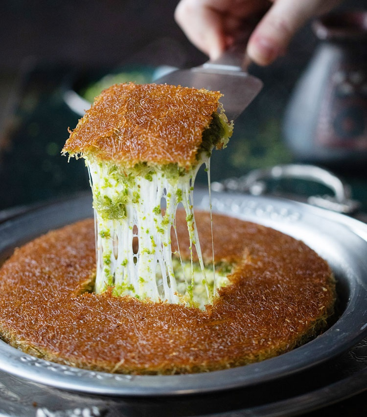

Künefe

Description
Künefe is one of my favorite desserts. It is a delicious dessert made with cheese and syrup.
It should be eaten hot because only then one can enjoy the stretching of the cheese and the amazing taste of hot syrup.
Ingredients
- Syrup (made with sugar, water and lemon)
- Raw kadayif noodles
- Cheese (mozzarella works fine)
- Butter
- Pistachio for garnish
- Two pans for two portions
- Two extra pans so that we can flip the dessert when cooking.
Steps
- Make the syrup first. Combine sugar, water and a slice of lemon in a sauce pan. Bring it to boil and let it simmer for 15 minutes. Let it cool completely.
- Butter the bottom of four pans.
- Place the first layer in a pan, the bottom of which is buttered well.
- Then shred some unsalted cheese like mozzarella over it and cover it with buttered kadayif dough noodles. Using your hands, press on it well so that everything sets well. Repeat this for the second pan.
- Over the lowest heat on the stove, cook it until the bottom is golden. Carefully place one of the extra pans on it and flip the dessert into that extra pan. Now golden side is on the top. Cook the other side until golden as well.
- Repeat this for the second portion.
- Pour cold syrup over the dessert when it is still hot.
- Garnish with ground pistachio and serve immediately.